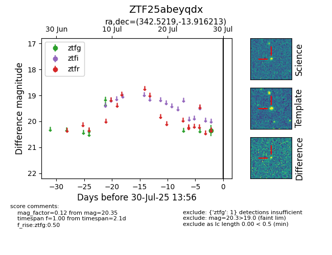

Target ZTF25abeyqdx at 2025-07-30 13:56, see:
FINK: fink-portal.org/ZTF25abeyqdx
Lasair: lasair-ztf.lsst.ac.uk/objects/ZTF25abeyqdx
ALeRCE: alerce.online/object/ZTF25abeyqdx
alt names
ZTF25abeyqdx (ztf,fink)
coordinates:
equatorial (ra, dec) = (342.5219,-13.91621)
galactic (l, b) = (51.8415,-58.78590)
photometry
last ztfg=20.35
1 ztfg detections
